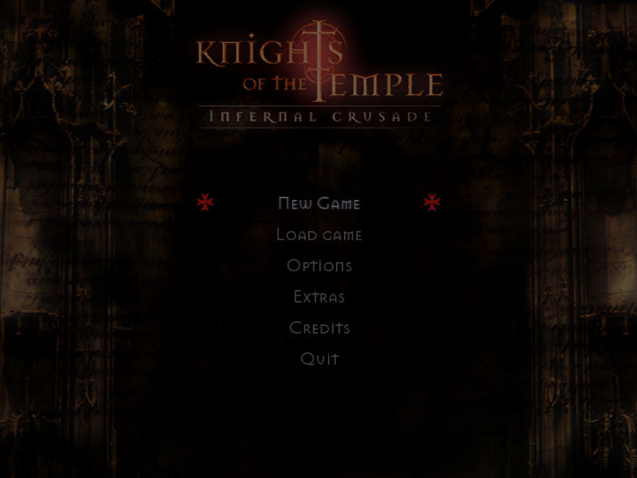
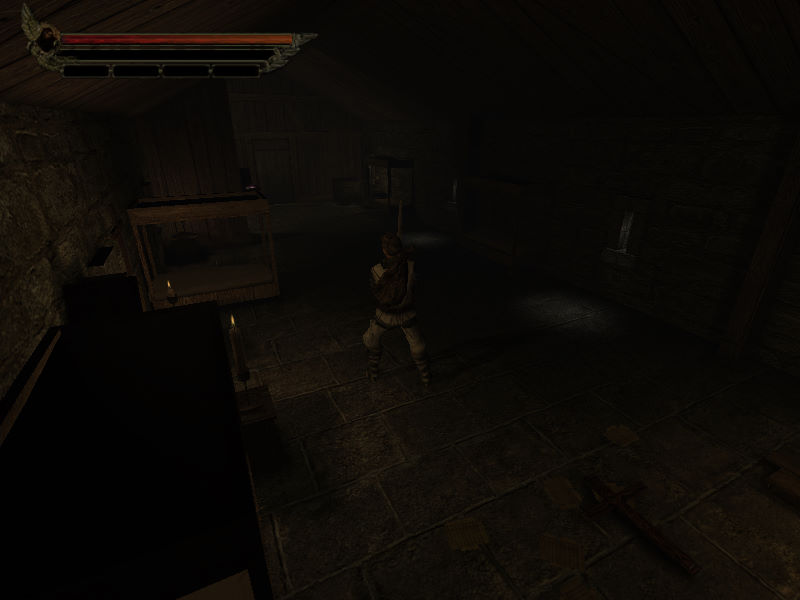

名稱：聖殿武士／聖殿騎士：地獄遠征 (Knights of the Temple: Infernal Crusade，英文版)
簡介：Starbreeze 2004年出品的砍殺類動作冒險遊戲，台灣由華星代理進口，但並未中文化
[待補]。


保護：光碟SecuROM 5.02
備註：遊戲顯示本身會過暗，可到OPTIONS的VIDEO，調整：
1.VIDEO MODE解析度調高至1024x768（或更高）。
2.REFRESH RATE調低至60。
3.SYNC TO REFRESH調成OFF。
4.BRIGHTNESS調高至1.0。
然後再用dgVoodoo2、D3DWindower等工具將遊戲以視窗模式重新開啟。如果還嫌太暗，
只能調整螢幕亮度因應了。
檔案：KnightsOfTheTemplePatch1.rar = 1.1更新檔
nocd10.rar = 1.0免光碟檔（會被報毒，請自行斟酌）
nocd11.rar = 1.1免光碟檔（會被報毒，請自行斟酌）
操作：Enter = 略過影片